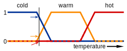
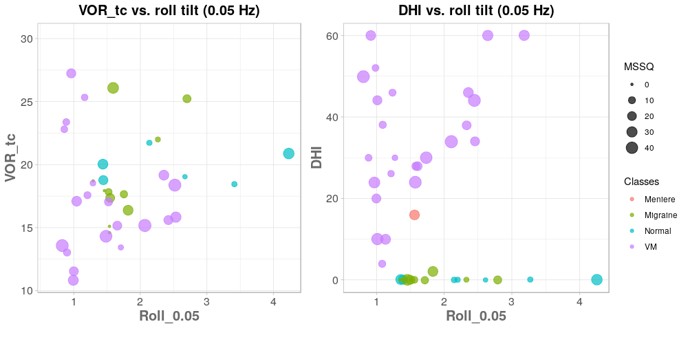
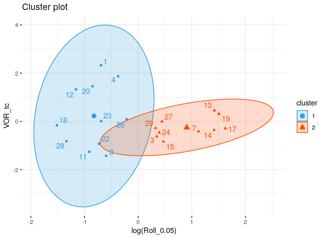
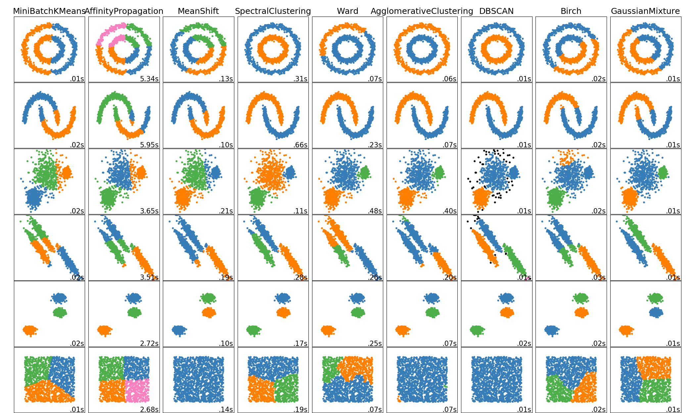
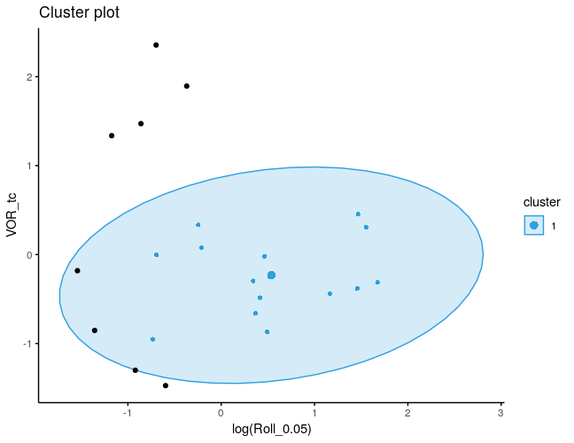
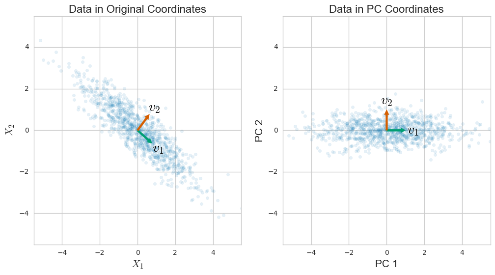
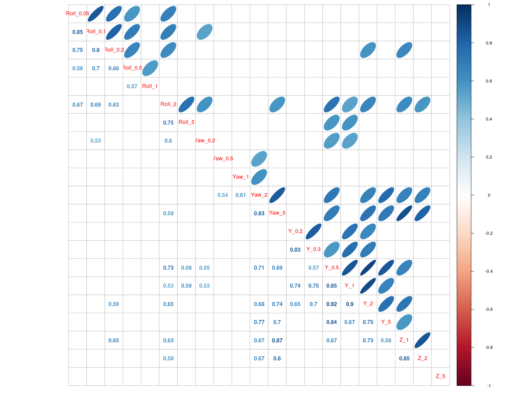
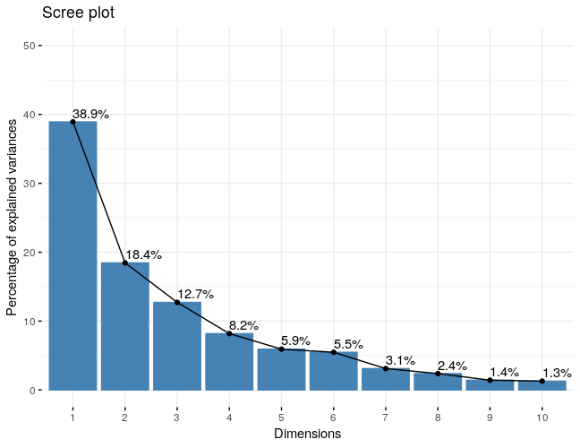
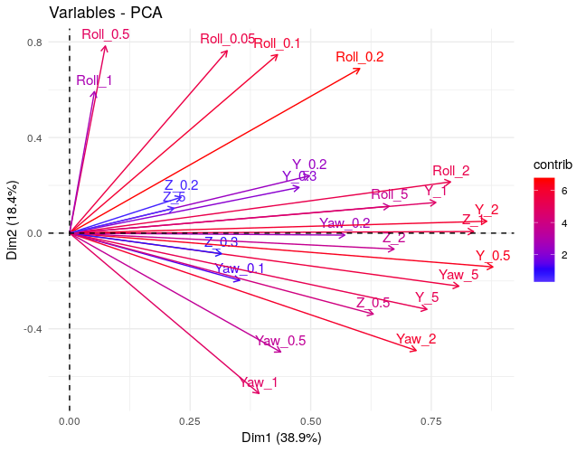
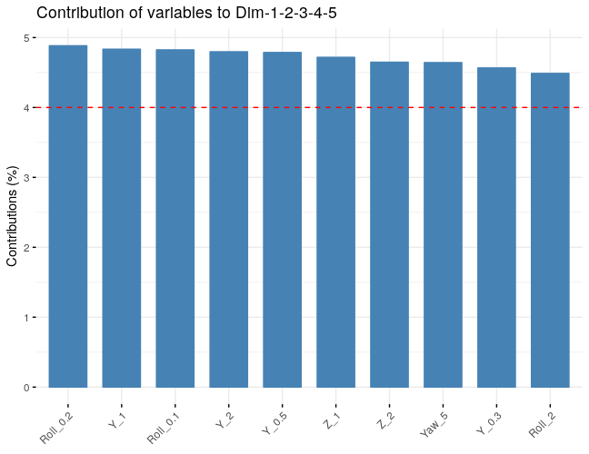

Applications of Machine Learning in Otology
by Farzad Ehtemam
Farzad
- Mechanical Engineering, BS, University of Tehran
- Biomedical Engineering, MS, Delft University of Technology
- Neuroscience, PhD, University of Maryland
Machine Learning and Big Data
It’s like sex in high school:
- Nobody knows how to do it properly
- But everyone thinks everyone else is doing it
- So everyone says they are doing it, too. -Dan Ariely, Duke University
Too much hype. Is it that good?!
Very Easy yet very difficult!

Progress in Problem solving
- “Big breakthroughs happen when what is suddenly possible meets what is desperately needed.” -Thomas Friedman, The New York Times
Machine learning
Supervised learning
Unsupervised learning
Reinforcement learning
Unsupervised learning
- Clustering
- Fuzzy clustering
- Density based clustering
- Blind signal separation
- Principal Component Analysis (PCA)
- Non-negative matrix factorization
Terminology
Training and test data
Truth labels
Features and target variables (feature engineering)
Transformations and Normalizations
- Choice of learner:
- High bias and many assumptions: LDA, naive Bayes
- Few/no assumptions but high variance: Decision trees, NN
Performance metric: accuracy, precision-recall, AUC (ROC), …
- Obstacles:
- Overfitting
- Curse of dimensionality
- Data leakage
- …
Fuzzy logic
Lotfi Zadeh (1965)
Mathematics of Fuzzy Sets 
Why fuzzy?!
Geometry of the data
Real world datasets are messy and fuzzy!

Vestibular migraine data
More info: Richard Lewis, …, Daniel Merfeld, J Vestibular Research, 2011
Roll tilt threshold, DHI, VOR (time constant)
Fuzzy clustering
Partition the space to c fuzzy clusters (assign centroids)
- Assign memberships:
- Minimize within cluster variability
- Maximize between cluster variability
- Calculate new centroids and repeat optimization
- argmin(\(\Sigma \Sigma w_{ij}^m||x_i-c_j||^2\) )
Clusters

Important points
Need to know number of clusters!
Transform and normalize your data appropriately
Examine cluster results accross different feature sets
- The choice of m (degree of fuzziness)
- Run sensitivity analysis
Density-based clustering

DBSCAN
Density-based spatial clustering of applications with noise
minPts and \(\epsilon\)

Clusters

Performance evaluation
Cross-validation
Build a test set
- Internal validity
- Silhouette Coefficient
- Calinski-Harabaz Index (AKA Variance Ratio Criterion)
Curse of dimensionality
Intuition fails in high dimentions
Feature engineering (domain-specific knowledge)
Concepts of similarity and neighborhood break down
Dimensionality reduction
PCA
- Finding the directions that maximizes variability
- Span the space using the basis formed by eigen vectors

Vestibular thresholds
More info: Yulia Valko, …, Daniel Merfeld, J Neuroscience, 2012
Roll, Yaw, Y, Z
Frequencies: 0.05-5 Hz
Features: 21
Correlations

Principal components (PCs)

How to understand PCs

Top features

Non-negative matrix factorization (NMF)
Lee and Seung (2001)
Sensorimotor control of movement (Bizzi’s group at MIT 2003)
Image recognition, text mining, spectral analysis, bioinformatics, …
\(V = W.H\)
- Vestibular data: 5 principal components (0-6)
- Computed thresholds
Keep in mind
More data always beats smarter algorithms (no data no knowledge)
Spend a lot of time on feature engineering
Less is not always more (model ensembles)
Cross-validation
In predictive modeling, generalization is all that matters